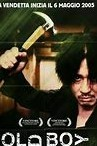

À toi l'amoureux(se) du 7e art
Toi qui as toujours rêvé d'écrire le scénario du prochain "Usual Suspects",ou peut-être
diriger tes propres acteurs et réussir à leur extirper les plus belles émotions;
ou plus simplement discuter avec des gens passionnés comme toi par le ...Cinéma.
alors l'association "LES COUSINS LUMIERES" te souhaite la bienvenue!!
Avec à l'affiche le film "Old Boy" de Park Chan-wook, Grand prix du Festival de Canns 2004,
suivi de "Parasites" de Bong Joon Ho, palme d'or 2019 au Festival de Cannes.
Nous finirons cette soirée par une discussion autour du thème :"La corée du sud,nouvel eldorado du cinéma asiatique?"

Avec à l'affiche le film "The kid" de Charlie Chaplin, suivi de "The Artist" de Michel Hazanavicius,
oscar du meilleur film 2012.
Nous continuerons cette soirée avec le débat: "Muet ou parlant , comment ressentir leurs émotions".